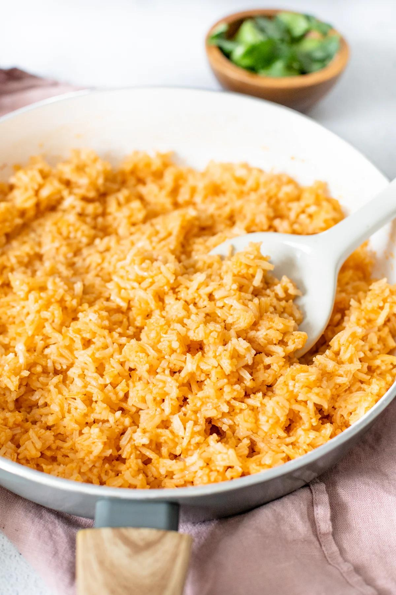

Rice

Mexican rice is an amazing authentic side to pair with all sorts of dishes!
The most common dish to pair with carne asada, grilled chicken, taquitos and more!
Not only is it good to pair with other main dishes but it's easy to make!
Ingredients
- 1 cup of water
- 1 cup of rice
- 1 tablespoon of oil
- 3 garlic cloves
- half diced onion
- 1 can of tomatoe sauce
- 1 tablespoon of chicken stock poweder
Steps
- Put cooking oil in pan on low heat.
- Add and sautee the garlic cloves and diced onion.
- Add rice into the pan.
- Cook rice until golden brown.
- Add the cup of water into the pan along with the can of tomatoe sauce.
- Put the lid of the pan and lower heat to lowest setting.
- Let the rice cook with water and sauce on low heat for about 5 minutes.
- After 5 minutes, turn the heat off and let the steam cook the rice for 10 minuts.